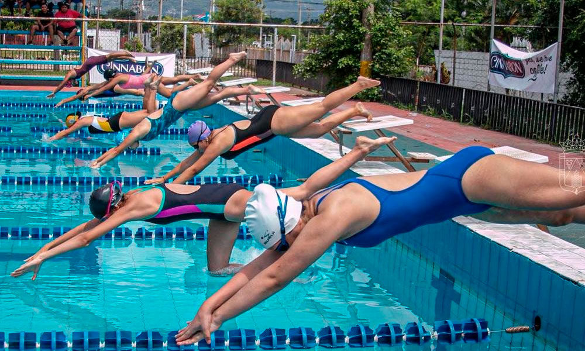
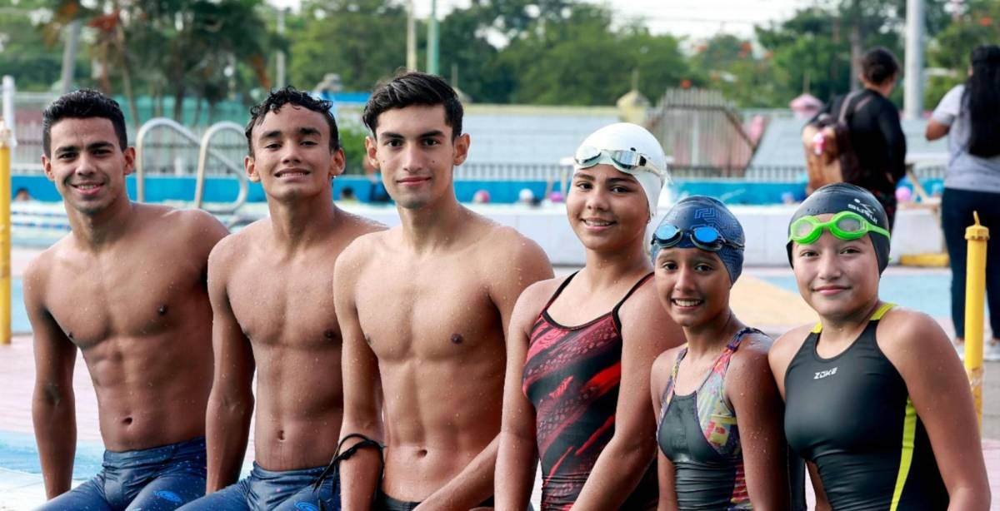

First slide label
No pretendas hacer todo perfecto a la primera, las cosas difíciles llevan su tiempo.

Second slide label
El verdadero fracaso no es perder, sino no atreverse a intentarlo.

Third slide label
“No te midas por lo que has logrado, sino por lo que deberías haber logrado con tu capacidad”

Third slide label
Cuanto más hacemos, más podemos hacer

Third slide label
Puedo porque creo que puedo

Third slide label
La persistencia puede cambiar el fracaso en un logro extraordinario

Third slide label
Tu mayor oponente no es la otra persona. Es la naturaleza humana
¿Qué es la natación?
Natación en Honduras La natación es la práctica recreativa o deportiva del movimiento y desplazamiento sobre el agua, empleando sólo los brazos y las piernas del cuerpo humano. Es una técnica, también, que se aprende como método de supervivencia (de hecho, se imparte en numerosos currículos educativos), y que se practica como ejercicio dados sus múltiples beneficios al cuerpo.
Su práctica puede ser competitiva o meramente recreativa. Como deporte formal es uno de los más practicados del mundo, incluido en las disciplinas olímpicas y llevado a cabo en piscinas de distinta longitud (50, 100, 200, 400, 800 y 1500 metros). Las técnicas de nado específicas se conocen como estilos y poseen nombres particulares.
El ejercicio de la natación es posible dado que el cuerpo humano es ligeramente menos denso que el agua, por lo que tiende siempre a flotar. Nuestra relación con el agua es muy particular, a pesar de ser seres terrestres, ya que al nacer nos extraen de un entorno totalmente sumergido como es el útero materno.
De hecho, los bebés muestran una tendencia innata a la natación y ciertos reflejos de buceo, como la contención automática de la respiración, disminución de la frecuencia cardíaca y reducción de la circulación a las extremidades (es el reflejo de inmersión mamífero).
Historia de la natación
La natación se ha practicado desde tiempos inmemoriales, y hay evidencia de su conocimiento en pinturas rupestres de más de 7.000 años de antigüedad. También se la menciona en textos provenientes de épocas posteriores, como del 2.000 a. C.: la Odisea, la Ilíada, la Biblia, etc.
Sin embargo, el primer libro sobre natación se escribió en 1538 y se le atribuye a Nikolaus Wynmann, profesor alemán de idiomas: El nadador o un diálogo en el arte de nadar.
Estilos de natación
Existen numerosos estilos de nadar, algunos personalizados o de poco uso, pero generalmente se habla de cuatro estilos principales, los cuales se distinguen en competiciones y están avalados por la Federación Internacional de Natación:
Estilo pecho o braza.
También conocido como “estilo rana”, pues el cuerpo humano se asemeja en movimientos al de ciertos anfibios, consiste en flotar boca abajo con los brazos apuntando al frente y las piernas levemente flexionadas. La cabeza se mantiene fuera del agua para tomar aire y luego los brazos se mueven en círculo debajo del agua, impulsando el cuerpo hacia adelante a medida que se imita el movimiento con los pies, encogiéndolos y estirándolos al mismo ritmo.
Estilo crol o libre.
Este estilo requiere que el nadador esté recto, acostado sobre un brazo que se sumerge recto dentro del agua, mientras el otro emerge con el codo flexionado y la palma extendida hacia abajo, dispuesta a entrar al agua. La cabeza se asoma de lado para tomar aire, que es expulsado cuando el torso se sumerge y gira para repetir el movimiento pero con el otro brazo. Mientras tanto, las piernas se mueven, relajadas, con los dedos en punta y los pies hacia adentro, dando patadas oscilantes.
Estilo espalda o dorsal.
Un estilo esencialmente similar al crol, pero boca arriba, con la espalda sumergida en el agua, moviendo un brazo en el aire con la palma de la mano saliendo desde debajo de la pierna, mientras el otro impulsa el cuerpo en el agua.
Estilo mariposa
. Una variación del estilo pecho o braza, en el que ambos brazos se mueven juntos hacia el frente y hacia atrás debajo del agua, impulsando el torso hacia adelante, de manera continua y acompañado por un movimiento ondulante de caderas, que sumerge la cabeza al ingresar al agua y culmina con una patada llamada “delfín” por su semejanza con el nado de estos animales, usando los pies juntos.